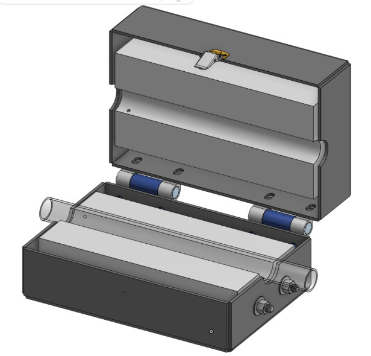
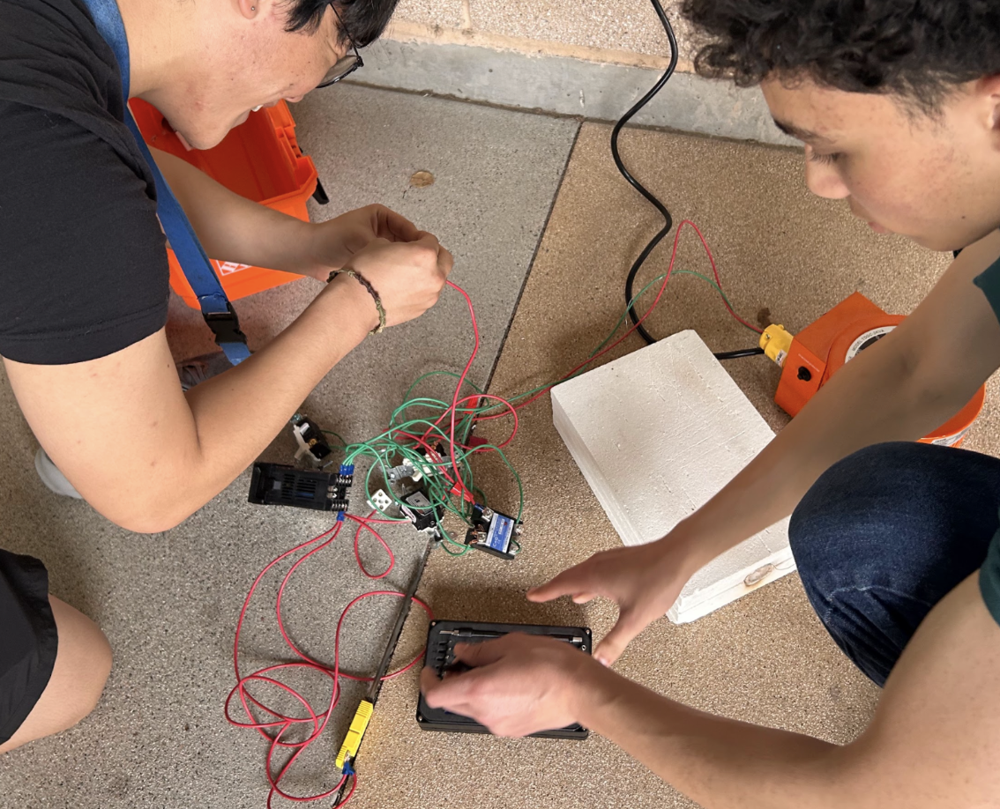
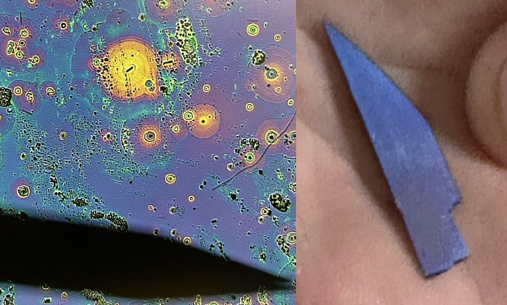
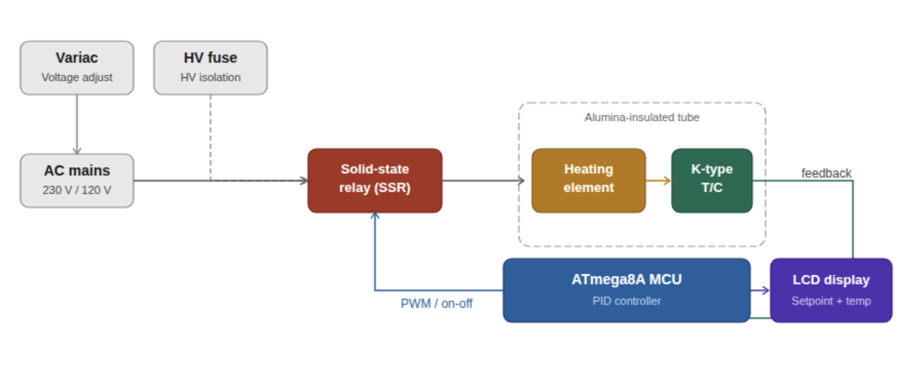

RepHlux — Wireless Batteryless Acid Reflux Monitor
Lucas Kang · lucasjk@uci.edu · UCI Engineering Senior Design
University of California, Irvine
B.S. Electrical Engineering & B.A. Music
Sep 2025 – Mar 2026
Page 1 of 2 · Introduction · Block Diagram · Hardware & System Overview
Introduction
ObjectiveAcid reflux monitoring typically relies on battery-powered capsules or wired catheter systems, which limit operational lifetime, increase device size, and reduce patient comfort. I worked with a four-person team to design an analog, wireless, batteryless implantable acid reflux monitor prototype powered entirely through inductive coupling at 215 kHz.
ContributionDesigned the power rectification circuit and batteryless telemetry architecture. Used VCO-based sensor oscillators that encode pH and impedance readings as frequency shifts, to switch a modulation load on the implant. This appears as AM sideband reflected impedance at the external reader belt, enabling passive, battery-free data transmission at 10–80 kHz sidebands around the 215 kHz carrier.
OutcomeAchieved 94 mW wireless power transfer at 15 mm operating depth, full-wave rectified 2.5 V DC supply confirmed on implant, and AM sideband telemetry validated via FFT. ISO 14708 safe-voltage (<2°C heating).
System Block Diagram
rephlux_block.png
System block diagram — power belt + implant
Fig. 1 System block diagram — power and reader belt generates 215 kHz carrier; implant rectifies to 2.5 V, sensor VCOs encode pH and impedance into frequency, MUX selects signal, load-modulation switch impresses sidebands on carrier for FFT readback.
Fig. 3 System body diagram — implant sits in the esophagus, wirelessly powered by belt coil at 215 kHz. pH and impedance VCOs encode data; sidebands appear in base station FFT.
UCI Engineering
RepHlux — Wireless Batteryless Acid Reflux Monitor
Lucas Kang · lucasjk@uci.edu · UCI Engineering Senior Design
University of California, Irvine
B.S. Electrical Engineering & B.A. Music
Sep 2025 – Mar 2026
Formula SAE Safety Shutdown Circuit
Lucas Kang · lucasjk@uci.edu · UCI Formula SAE Electric Vehicle
University of California, Irvine
B.S. Electrical Engineering & B.A. Music
Sep 2024 – Jun 2025
Page 1 of 2 · Introduction · System Block Diagram · Hardware
Introduction
ObjectiveThe Formula SAE Electric Vehicle requires a fully analog Shutdown Circuit that disables the tractive system within 500 ms in response to insulation (IMD), battery (BMS), and simultaneous hard brake and acceleration (BSPD) fault conditions. This system cannot be re-enabled from inside the cockpit, and must stay disabled until manual reset.
ContributionDesigned a low-voltage three-stage self-latching relay PCB implementing independent fault paths for BMS, IMD, and BSPD. Each stage uses a self-holding NO contact so any fault latches the relay open regardless of driver input, requiring manual reset at the vehicle per EV.7.2.3.
OutcomeAchieved <20 ms fault response across 50+ bench tests with 100% detection accuracy. Passed FSAE electrical technical inspection and integrated into the competition vehicle HV safety chain.
Designed, fabricated, and validated by Lucas Kang as part of UCI Formula SAE's electrical team. PCB manufactured via JLCPCB. Reviewed against FSAE 2025 rules EV.7.1–EV.7.9.
1200 °C Tube Furnace for Semiconductor Oxidation
Lucas Kang · lucasjk2004@gmail.com · Hacker Fab / UCI Student-Led Semiconductor Lab
University of California, Irvine
B.S. Electrical Engineering & B.A. Music
Sep 2024 – Jun 2025
Page 1 of 2 · Introduction · Hardware Gallery
Introduction
ObjectiveCommercial tube furnaces capable of 1200 °C silicon oxidation cost upward of $3,000 and are unavailable in most student lab settings. As part of the UCI Hacker Fab initiative, I co-built a fully programmable, low-cost alumina-tube furnace enabling student-accessible semiconductor fabrication from scratch.
ContributionDesigned the PID temperature control PCB around an ATmega8A MCU with K-type thermocouple feedback, driving a high-voltage resistive heating element through a solid-state relay. Implemented HV isolation with a high-current fuse and alumina ceramic insulation for safe operation.
OutcomeAchieved ramp rates up to 20 °C/min and sustained ±2 °C accuracy at 1200 °C. Verified successful silicon wafer thermal oxidation via microscope inspection of oxide film. Total system cost: under $500 versus $3,000+ commercial alternatives.
Hardware Gallery

furnace_cad.png
CAD model of furnace
Fig. 1 CAD model — clamshell alumina-tube furnace with ceramic end-caps.
furnace_glowing.png
Tube at operating temp
Fig. 2 Tube at 1200 °C — silicon wafer sample loaded inside the alumina tube.

furnace_build.png
Build / team photo
Fig. 3 Build — team wiring PID control PCB and SSR assembly.

furnace_oxide.png
Microscope SiO₂ film
Fig. 4 Microscope — thermally grown SiO₂ film on silicon wafer.
UCI Engineering
1200 °C Tube Furnace for Semiconductor Oxidation
Lucas Kang · lucasjk2004@gmail.com · Hacker Fab / UCI Student-Led Semiconductor Lab
University of California, Irvine
B.S. Electrical Engineering & B.A. Music
Sep 2024 – Jun 2025
Page 2 of 2 · System Block Diagram · Design Specifications · Results
System Block Diagram

furnace_diagram.png
System block diagram
Fig. 5 PID control loop — Variac adjusts input voltage; HV fuse protects the line; SSR switches AC to heating element; K-type thermocouple feeds back to ATmega8A MCU; LCD displays setpoint and measured temperature.
Design Specifications
Parameter
Value
Notes
Max temperature
1200 °C
Alumina tube rated
Temp accuracy
±2 °C
K-type thermocouple
Ramp rate
20 °C/min
PID controlled
MCU
ATmega8A
C++ firmware, PID loop
HV isolation
SSR + fuse
Alumina ceramic insulation
Total cost
<$500
vs. $3,000+ commercial
Tube material
Alumina
Inert to O₂ at 1200 °C
Control firmware
C++ / AVR
ATmega8A, custom PID
Engineering Contributions
Built a low-cost, programmable alumina-tube furnace for semiconductor oxidation, enabling student-accessible fabrication at UCI Hacker Fab
Designed PID temperature control PCB using an ATmega8A MCU with thermocouple feedback driving a HV heating element
Achieved ramp rates up to 20 °C/min and maintained ±2 °C accuracy up to 1200 °C
Implemented HV isolation using solid-state relay, high-current fuse, and alumina ceramic insulation
Delivered complete system under $500 vs. $3,000+ commercial alternatives; verified silicon wafer oxidation via microscope
Designed and laid out custom PCB in KiCad; validated control loop behavior in LTspice prior to hardware build
Results & Acknowledgements
Validated Results
±2 °C at 1200 °C20 °C/min rampSiO₂ film verifiedHV SSR isolation<$500 total costWet/dry oxidation
Built as part of the UCI Hacker Fab student-led semiconductor lab initiative. Hardware design, firmware, and PCB layout by Lucas Kang in collaboration with Hacker Fab teammates, Sep 2024 – Jun 2025.